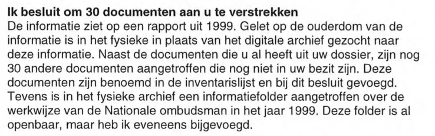

Beweisstück · Brief
Nationaler Ombudsmann, Woo-Bescheid zur Akte des Berichts 1999/507, 7. Februar 2024
Die Passage
„Ich beschließe, Ihnen 30 Dokumente zu übermitteln. Die Informationen beziehen sich auf einen Bericht aus dem Jahr 1999. Angesichts des Alters der Informationen wurde im physischen statt im digitalen Archiv nach diesen Informationen gesucht. Neben den Dokumenten aus Ihrer Akte, die Sie bereits haben, wurden noch 30 weitere Dokumente gefunden, die sich noch nicht in Ihrem Besitz befinden.“ Seite 1. Der erste Satz ist im Bescheid eine Zwischenüberschrift; die drei Sätze danach eröffnen den Absatz darunter. Aus dem Niederländischen übersetzt; der Originaltext steht unten.
Originaltext
“Ik besluit om 30 documenten aan u te verstrekken. De informatie ziet op een rapport uit 1999. Gelet op de ouderdom van de informatie is in het fysieke in plaats van het digitale archief gezocht naar deze informatie. Naast de documenten die u al heeft uit uw dossier, zijn nog 30 andere documenten aangetroffen die nog niet in uw bezit zijn.” Die Zwischenüberschrift hat im Bescheid keinen Punkt. Die Zeilen des Scans sind hier zusammengeführt.

Warum dieses Dokument wichtig ist
In diesem Bescheid vom 7. Februar 2024 übermittelt der Nationale Ombudsmann Giltay dreißig Dokumente zum Bericht 1999/507, die sich noch nicht in Giltays Besitz befanden. Sie wurden im physischen Archiv gefunden. Giltay hatte sie am 1. September 2023 beantragt; am 27. Dezember 2023 verpflichtete das Bezirksgericht Den Haag den Ombudsmann, innerhalb von zwei Wochen zu entscheiden, unter Androhung eines Zwangsgelds. Im Bescheid wird um Entschuldigung für die Verzögerung gebeten und eine gesonderte Mitteilung über das verwirkte Zwangsgeld angekündigt. Die Dokumente wurden nach Artikel 5.5 des niederländischen Informationsfreiheitsgesetzes (Wet open overheid, Woo) nur Giltay übermittelt und nicht öffentlich gemacht. Der Essay nennt diesen Bescheid als den Moment, in dem ans Licht kam, was im Tresor lag. Eines der dreißig Dokumente ist der Telefonvermerk vom 7. Oktober 1999 über die Einstellungsuntersuchung beim Verteidigungsministerium, Nummer 11 der Inventarliste.
Herkunft
- Dokument
- Bescheid auf einen Antrag nach der Wet open overheid (Woo), dem niederländischen Informationsfreiheitsgesetz
- Absender
- Nationaler Ombudsmann, Den Haag
- Empfänger
- E.F. Giltay, Den Haag
- Datum
- 7. Februar 2024, gestempelt
- Geschäftszeichen
- 1815950
- Betreff
- „Woo-besluit“ (Woo-Bescheid)
- Bezug
- Giltays Antrag vom 1. September 2023 auf zugrunde liegende Informationen zum Bericht 1999/507
- Anlagen
- 32: die dreißig Dokumente, die Inventarliste und ein Informationsfaltblatt des Nationalen Ombudsmanns von 1999 (nicht im Scan enthalten)
- Unterzeichnet
- Der Nationale Ombudsmann, in dessen Namen, Hanneke van Essen, Generaldirektorin; die Unterschrift selbst ist im Scan geschwärzt
- Mandat
- Der Bescheid gilt als Bescheid des Nationalen Ombudsmanns Reinier van Zutphen, der dafür die Verantwortung trägt.
- Geschwärzt
- Name und Telefonnummer der Kontaktperson mit den Initialen dahinter sowie die Unterschrift
- Sprache
- Niederländisch
- Seiten
- 3
- Siehe auch
- Nationaler Ombudsmann über die Akte Giltay, 18. Mai 2017Bezirksgericht Den Haag, Urteil vom 27. Dezember 2023 (ECLI:NL:RBDHA:2023:20409)ING-Kontoauszug, Zwangsgeldzahlung des Nationalen Ombudsmanns, 16. Februar 2024Verteidigungsministerium an den Nationalen Ombudsmann über Giltay, 7. Oktober 1999
Zitiert in: dem Essay „Das Verbot fiel, das Buch hielt stand“ in den Kapiteln (3) „Was das Buch enthüllt: die Srebrenica-Vertuschung“ und (9) „Für immer festgehalten“.
Beweiskarte: https://
Dokument: https://
Zuletzt geändert am 10. Oktober 2026, abgerufen am 10. Oktober 2026.

Diese Seite ist ein Beweisstück zum Buch Der Cover-up-General von Edwin Giltay und zur dazugehörigen Website.